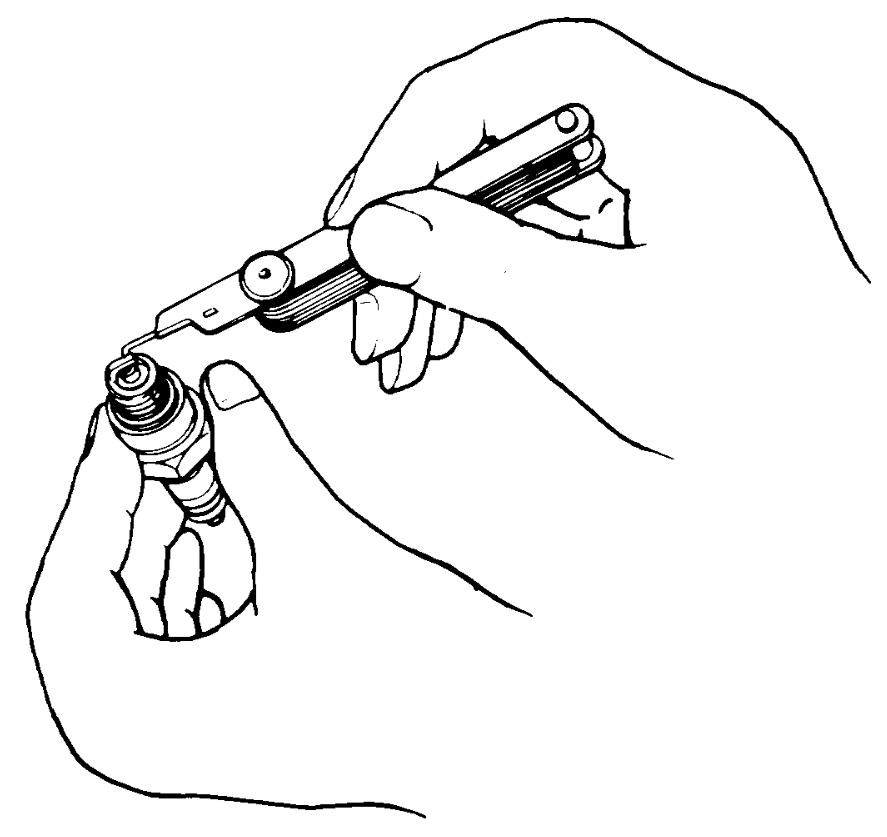
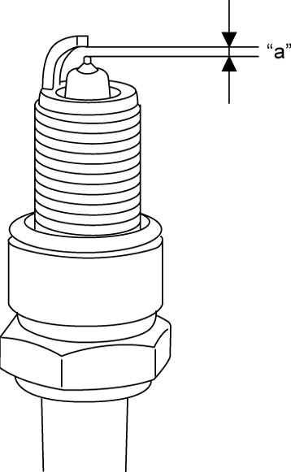

1H
| Spark Plug Inspection |
NOTICE:
The iridium spark plug has a slender center electrode that is made of a material sensitive to mechanical forces. It may be damaged if handled carelessly.
Do not touch the center electrode of an iridium spark plug. Avoid cleaning it or adjusting its electrode gap.
Check spark plug for:
•Electrode wear
•Carbon deposits
•Insulator damage
•Spark plug air gap
•Carbon deposits
•Insulator damage
•Spark plug air gap
Check spark plug air gap “a” using wire type plug gap gauge.
If out of specification of the air gap or any other abnormality is found with iridium spark plug, replace it with new plug.
Spark plug air gap
“a”
:
0.7 to 0.8 mm (0.028 to 0.031 in.)
Spark plug type
NGK:
ILZKR7D8 (Iridium)

 "Expand image")

 "Expand image")